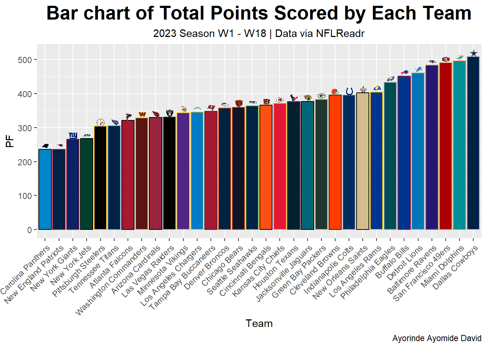
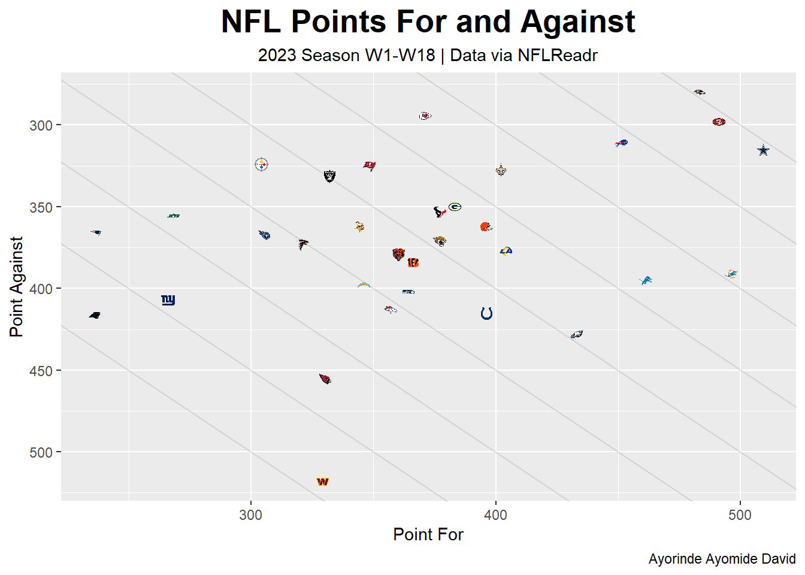

if(!require(pacman)) install.packages("pacman") # installing the package manager
pacman::p_load(tidyverse, #R meta-package
nflreadr, # R library for NFL data
gt, # R library for interactive tables
ggimage, # R library
gtExtras,
future,
visdat,
inspectdf, # R library for visual EDA
gtsummary) # R library for descriptive EDAThis project explores the data from the 2023/24 NFL season to provide valuable insight about the happenings of the season
Loading dependencies
Telling R to run future tasks in parallel i.e each on its own background session in R(seperate R process)
plan("multisession")
options(timeout = 300) # Timeout of 60secs was reached without the dataset being loaded. Hence, the need to manually increase the timeout limit to 5 minsLoading NFL data for 2023/24 season
pbp <- load_pbp(2023)
plan("sequential")Exploring, selecting and inspecting the variables of interest
#Exploring the whole dataset
dim(pbp)[1] 49665 372head(pbp)# A tibble: 6 × 372
play_id game_id old_game_id home_team away_team season_type week posteam
<dbl> <chr> <chr> <chr> <chr> <chr> <int> <chr>
1 1 2023_01_ARI… 2023091007 WAS ARI REG 1 <NA>
2 39 2023_01_ARI… 2023091007 WAS ARI REG 1 WAS
3 55 2023_01_ARI… 2023091007 WAS ARI REG 1 WAS
4 77 2023_01_ARI… 2023091007 WAS ARI REG 1 WAS
5 102 2023_01_ARI… 2023091007 WAS ARI REG 1 WAS
6 124 2023_01_ARI… 2023091007 WAS ARI REG 1 WAS
# ℹ 364 more variables: posteam_type <chr>, defteam <chr>, side_of_field <chr>,
# yardline_100 <dbl>, game_date <chr>, quarter_seconds_remaining <dbl>,
# half_seconds_remaining <dbl>, game_seconds_remaining <dbl>,
# game_half <chr>, quarter_end <dbl>, drive <dbl>, sp <dbl>, qtr <dbl>,
# down <dbl>, goal_to_go <int>, time <chr>, yrdln <chr>, ydstogo <dbl>,
# ydsnet <dbl>, desc <chr>, play_type <chr>, yards_gained <dbl>,
# shotgun <dbl>, no_huddle <dbl>, qb_dropback <dbl>, qb_kneel <dbl>, …# Selecting the variable of interest
pbp_selected <- pbp %>%
select(game_id, week, home_team, away_team,season_type,game_date,result,home_score,away_score)
#Inspecting the selected variables for missing values
pbp_selected %>%
filter(is.na(week)) # A tibble: 0 × 9
# ℹ 9 variables: game_id <chr>, week <int>, home_team <chr>, away_team <chr>,
# season_type <chr>, game_date <chr>, result <int>, home_score <int>,
# away_score <int>pbp_selected %>%
filter(is.na(home_team))# A tibble: 0 × 9
# ℹ 9 variables: game_id <chr>, week <int>, home_team <chr>, away_team <chr>,
# season_type <chr>, game_date <chr>, result <int>, home_score <int>,
# away_score <int>pbp_selected %>%
filter(is.na(away_team))# A tibble: 0 × 9
# ℹ 9 variables: game_id <chr>, week <int>, home_team <chr>, away_team <chr>,
# season_type <chr>, game_date <chr>, result <int>, home_score <int>,
# away_score <int>pbp_selected %>%
filter(is.na(season_type))# A tibble: 0 × 9
# ℹ 9 variables: game_id <chr>, week <int>, home_team <chr>, away_team <chr>,
# season_type <chr>, game_date <chr>, result <int>, home_score <int>,
# away_score <int>pbp_selected %>%
filter(is.na(game_date))# A tibble: 0 × 9
# ℹ 9 variables: game_id <chr>, week <int>, home_team <chr>, away_team <chr>,
# season_type <chr>, game_date <chr>, result <int>, home_score <int>,
# away_score <int>pbp_selected %>%
filter(is.na(result))# A tibble: 0 × 9
# ℹ 9 variables: game_id <chr>, week <int>, home_team <chr>, away_team <chr>,
# season_type <chr>, game_date <chr>, result <int>, home_score <int>,
# away_score <int>pbp_selected %>%
filter(is.na(home_score))# A tibble: 0 × 9
# ℹ 9 variables: game_id <chr>, week <int>, home_team <chr>, away_team <chr>,
# season_type <chr>, game_date <chr>, result <int>, home_score <int>,
# away_score <int>pbp_selected %>%
filter(is.na(away_score))# A tibble: 0 × 9
# ℹ 9 variables: game_id <chr>, week <int>, home_team <chr>, away_team <chr>,
# season_type <chr>, game_date <chr>, result <int>, home_score <int>,
# away_score <int># Inspecting the categorical variables from pbp_selected for inconsistency
pbp_selected %>%
select(home_team) %>%
unique()# A tibble: 32 × 1
home_team
<chr>
1 WAS
2 NYJ
3 ATL
4 CLE
5 NYG
6 KC
7 CHI
8 BAL
9 IND
10 SEA
# ℹ 22 more rowspbp_selected %>%
select(away_team) %>%
unique()# A tibble: 32 × 1
away_team
<chr>
1 ARI
2 BUF
3 CAR
4 CIN
5 DAL
6 DET
7 GB
8 HOU
9 JAX
10 LA
# ℹ 22 more rowspbp_selected %>%
select(season_type) %>%
unique()# A tibble: 2 × 1
season_type
<chr>
1 REG
2 POST # Dropping duplicate entries
pbp_selected <- pbp_selected %>%
unique()Analyzing the dataset to identify the team who won the SUPER BOWL
pbp_selected_post <- pbp_selected %>% # Filtering the dataset to include only SUPER BOWL matches
filter(season_type == "POST")
pbp_post_winners <- pbp_selected_post %>% # Creating a new column for the winning teams across the matches played
mutate(home_winner = result >0,
winning_team = case_when(home_winner == T ~ home_team,
home_winner == F ~ away_team))
pbp_post_winners %>% # filtering by week and selecting the winning team column to identify 2023/24 season Super Bowl winner
filter(week == 22) %>%
select(winning_team)# A tibble: 1 × 1
winning_team
<chr>
1 KC Calculating the point differential for the 2023/24 season
pbp_selected_diff <- pbp_selected %>%
filter(season_type == "REG") %>%
group_by(home_team) %>%
mutate(home_pf = sum(home_score),
home_pa = sum(away_score)) %>%
ungroup() %>%
group_by(away_team) %>%
mutate(away_pf = sum(away_score),
away_pa = sum(home_score)) %>%
ungroup()
pbp_selected_diff1 <- pbp_selected_diff %>%
reframe(team = home_team,
pf = home_pf,
pa =home_pa) %>%
unique()
pbp_selected_diff2 <- pbp_selected_diff %>%
reframe(team = away_team,
pf = away_pf,
pa = away_pa) %>%
unique()
pbp_diff_comb <- rbind(pbp_selected_diff1,pbp_selected_diff2) %>%
group_by(team) %>%
mutate(pf = sum(pf), pa = sum(pa), pt_diff = pf - pa) %>%
unique()
pbp_diff_comb# A tibble: 32 × 4
# Groups: team [32]
team pf pa pt_diff
<chr> <int> <int> <int>
1 WAS 329 518 -189
2 NYJ 268 355 -87
3 ATL 321 373 -52
4 CLE 396 362 34
5 NYG 266 407 -141
6 KC 371 294 77
7 CHI 360 379 -19
8 BAL 483 280 203
9 IND 396 415 -19
10 SEA 364 402 -38
# ℹ 22 more rows# Creating a csv file of point differential
write_csv(pbp_diff_comb, "poinit_diffential.csv")Visualizing the dataset
pbp_ptdiff_comb <- read_csv("poinit_diffential.csv")
teams_colors_logos <- load_teams()
teams_colors_logos_logo <- teams_colors_logos %>%
select(team_abbr,team_name,team_logo_espn,team_wordmark,team_color,team_color2)
pbp_ptdiff_comb_modified <- pbp_ptdiff_comb %>%
left_join(teams_colors_logos_logo, by = c("team"="team_abbr"))
options(timeout = 300)
pbp_ptdiff_comb_modified %>%
ggplot(mapping = aes(x = reorder(team_name, pf),y = pf)) +
geom_bar(aes(fill = team_color, colour = team_color2), stat = "identity") +
scale_color_identity(aesthetics = c("fill","color")) +
geom_image(aes(y = pf + 11, image = team_logo_espn),
asp = 16/9, size = 0.025) +
labs(x = "Team",
y = "PF",
title = "Bar chart of Total Points Scored by Each Team") +
theme(plot.title = element_text(hjust = 0.5,
face = "bold",
size = 20),
plot.subtitle = element_text(hjust = 0.5),
axis.text.x = element_text(angle = 45, hjust = 1))
pbp_ptdiff_comb_modified %>%
ggplot(mapping = aes(x = pf,
y = pa)) +
geom_abline(slope = -1, intercept = 0, color = "grey", alpha = 0.5)+
geom_abline(slope = -1, intercept = 50, color = "grey", alpha = 0.5)+
geom_abline(slope = -1, intercept = -50, color = "grey", alpha = 0.5)+
geom_abline(slope = -1, intercept = 100, color = "grey", alpha = 0.5)+
geom_abline(slope = -1, intercept = -100, color = "grey", alpha = 0.5)+
geom_abline(slope = -1, intercept = 150, color = "grey", alpha = 0.5)+
geom_abline(slope = -1, intercept = -150, color = "grey", alpha = 0.5)+
geom_abline(slope = -1, intercept = 200, color = "grey", alpha = 0.5)+
geom_abline(slope = -1, intercept = -200, color = "grey", alpha = 0.5)+
scale_y_reverse() +
geom_image(aes(image = team_logo_espn),
asp = 16/19,
size = 0.04) +
labs(x = "Point For",
y = "Point Against",
title = "NFL Points For and Against",
subtitle = "2023 Season W1-W18 | Data via NFLReadr",
caption= "Ayorinde Ayomide David") +
theme(plot.title = element_text(hjust = 0.5,
face = "bold",
size = 20),
plot.subtitle = element_text(hjust = 0.5)
)
pbp_ptdiff_comb_modified %>%
reframe(team_wordmark,pf,pa,pt_diff) %>%
arrange(-pt_diff) %>%
gt() %>%
gt_img_rows(team_wordmark) %>%
cols_label(team_wordmark = "Team",
pf = "PF",
pa = "PA",
pt_diff = "PD") %>%
cols_align(align = "center") %>%
gt_theme_espn() %>%
tab_header(title = "Team Point Differentials 2023/24 Season") %>%
data_color(columns = c(pt_diff),
target_columns = c(pt_diff),
colors = scales::col_numeric(
palette = c("tomato3", "green4"),
domain = NULL
))| Team Point Differentials 2023/24 Season | |||
|---|---|---|---|
| Team | PF | PA | PD |
 |
483 | 280 | 203 |
 |
509 | 315 | 194 |
 |
491 | 298 | 193 |
 |
451 | 311 | 140 |
 |
496 | 391 | 105 |
 |
371 | 294 | 77 |
 |
402 | 327 | 75 |
 |
461 | 395 | 66 |
 |
396 | 362 | 34 |
 |
383 | 350 | 33 |
 |
404 | 377 | 27 |
 |
377 | 353 | 24 |
 |
348 | 325 | 23 |
 |
377 | 371 | 6 |
 |
433 | 428 | 5 |
 |
332 | 331 | 1 |
 |
344 | 362 | -18 |
 |
366 | 384 | -18 |
 |
360 | 379 | -19 |
 |
396 | 415 | -19 |
 |
304 | 324 | -20 |
 |
364 | 402 | -38 |
 |
321 | 373 | -52 |
 |
346 | 398 | -52 |
 |
357 | 413 | -56 |
 |
305 | 367 | -62 |
 |
268 | 355 | -87 |
 |
330 | 455 | -125 |
 |
236 | 366 | -130 |
 |
266 | 407 | -141 |
 |
236 | 416 | -180 |
 |
329 | 518 | -189 |